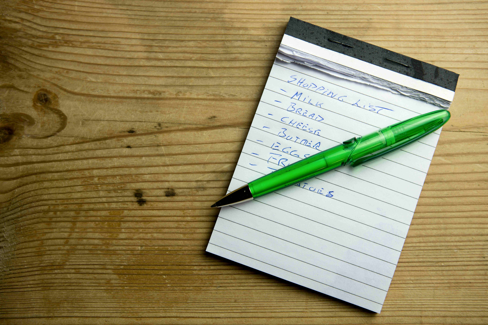
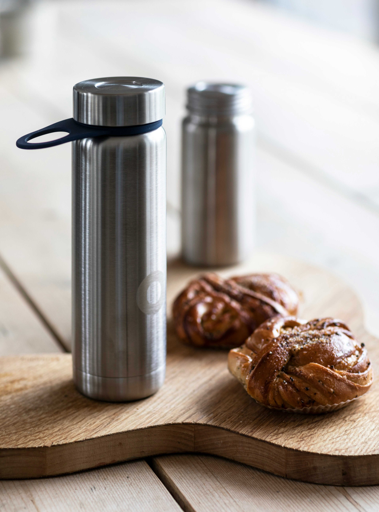
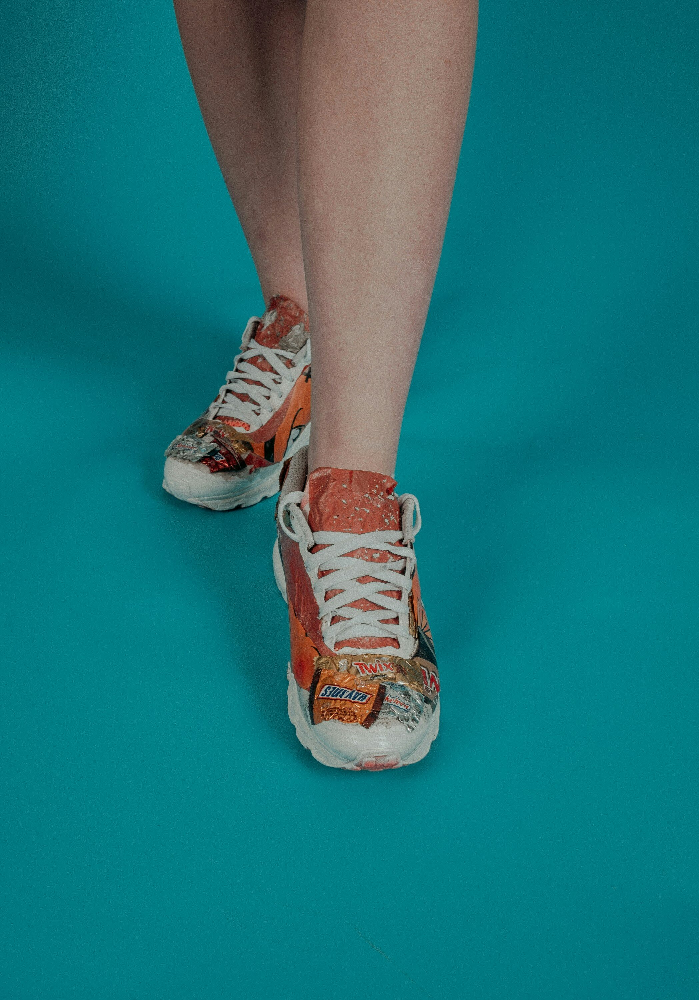
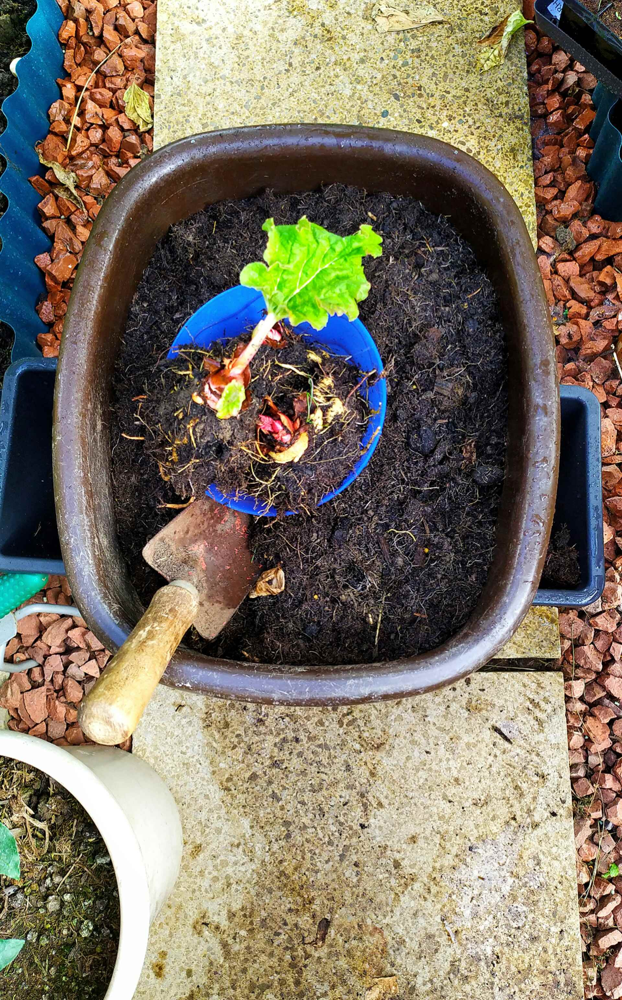
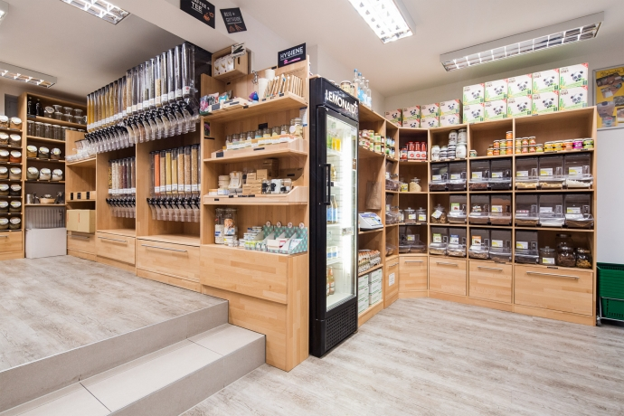
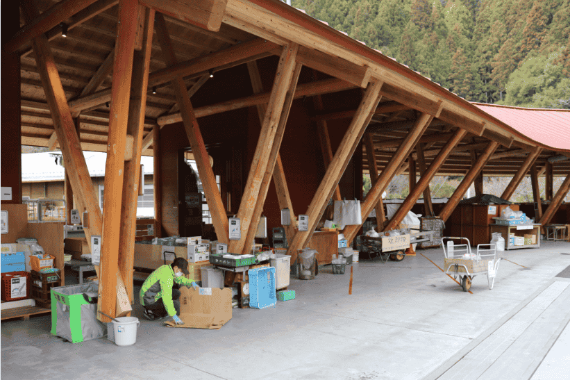
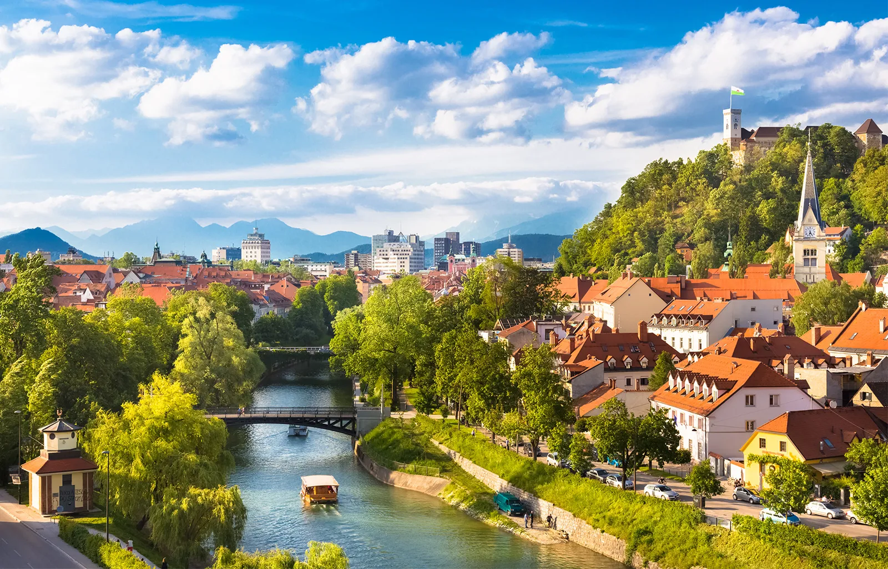

Refusing
The first step to a zero-waste lifestyle is to prevent the waste from entering your home in the first place. This involves saying “no” to promotional samples, junk mail, single-use disposables such as bags, straws, cups, and cutlery, or any short-lived form of unnecessary items.

Reducing
Reducing what you do need implies getting clear about what you need and being mindful about your purchasing decisions. It means to let go of household items that are no longer of use and avoid impulse purchases such as buy 1-get-2 offers, discount products, and processed foods among others.

Reusing
Reusing involves repairing instead of throwing and replacing products and switching single-use items by permanent alternatives. This includes replacing plastic bottles with stainless steel water bottles, for instance, using fabric bags, bamboo toothbrushes, or buying unpackaged foods among other solutions. Also buying second-hand and visiting antique stores.

Recycling
Recycling comes as the last option after refusing, reduce and reusing. The reason is, nowadays, we consume and dispose at a higher path than we are capable of recycling. As a result, many recyclable materials end up in landfills, shipped to developing countries, or in WTE incineration plants as they couldn’t be recycled.

Rotting
Rot or transform what is left. This applies mainly to organic waste coming from food. As a consumer, there are some methods to compost your household waste such as the Bokashi method, garden compost, or vermicomposting. On the other hand, WTE systems like REVALUO, transform municipal organic waste into fuel.
Garbage the average person produces yearly
215 million tonnes of waste is produced in the U.K each year;
28 tonnes of which is produced by households;
And 1.3 million tonnes of waste is produced on average by every single person annually.
In 2024, the average person in the UK produced 400kg of waste, which is equivalent to 7
times their body weight
Successful zero-waste stores and communities

Unverpackt (Berlin,Germany)
Supermarket
Since opening in February 2014, Germany’s first packaging-free store Unverpackt in Kiel, has been pursuing a drastic reduction of packaging waste while motivating customers to rethink their consumer behavior. More than 100 stores in Germany are already following this example, the zero waste retail movement has only just begun.

ZERO WASTE TOWN Kamikatsu
Art Director
SIn 2003, the tiny mountain town of Kamikatsu (population ~1,700) vowed to “zero waste” by 2020. Residents now sort refuse into 45 categories—everything from “nail polish” to “vegetable peels”—and achieve an 80% recycling rate (versus Japan’s national average of ~20%). Local community centers teach upcycling crafts, and a “Zero Waste Academy” draws international visits to learn their systems.

Ljubljana, Slovenia—Europe’s
Art Director
In 2018, Ljubljana became the world’s first zero-waste capital, committing to reduce landfill use to under 10% by 2025. The city invested in comprehensive recycling infrastructure, curbside compost pickup and a “zero-waste starter kit” for new residents. Local bulk stores and farmers’ markets offer package-free options, while cafes and restaurants are incentivized to use returnable containers.